1072C44 exhaust manifold heat shield on bulkhead - r+r
- Path
- Procedures > 10 ENGINE > 1072 INLET AND EXHAUST MANIFOLDS > 1072C exhaust manifolds > 1072C44 exhaust manifold heat shield on bulkhead - r+r
- Kind
- repair procedure (removal / refitting; the operation number is the code)
- Applies to
- all engines; all production periods
- Interactive page
- https://sloeber94.github.io/elrnDB-a156/en/#/3237699
Applies to: engines: 1.6 TS , 1.8 TS; all production periods; only with equipment: Euro 3
 Removing
Removing
 Refitting
RefittingPosition the vehicle on the ramp.
Ensure that the ignition key is in the stop OFF, then disconnect the battery negative terminal.
 | Name | Connector |
|---|---|---|
- | Battery |
1. Tighten the upper nuts securing the exhaust manifold heat shield.
2. Withdraw the oil level dipstick.
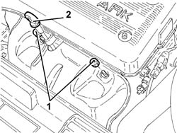
Applies to: engines: 1.6 TS , 1.8 TS; all production periods; only with equipment: Euro 3
1. Disconnect the electrical connection for the right Lambda sensor.
| Name | Connector |
|---|---|---|
1 | Lambda sensor |
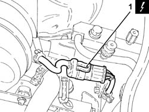
Applies to: engines: 1.6 TS , 1.8 TS; all production periods; only with equipment: Euro 3
1. Loosen the lower bolts fixing the exhaust manifold heat shield.
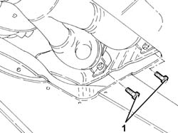
Applies to: engines: 1.6 TS , 1.8 TS; all production periods; only with equipment: Euro 3
1. Remove the exhaust manifold heat shield.
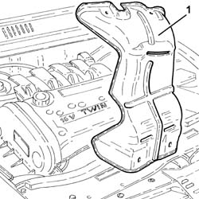
Applies to: engines: 1.6 TS , 1.8 TS; all production periods; only with equipment: Euro 3
Refitting
RemovingPllace the exhaust manifold heat shield back in its housing.
Tighten the lower bolts fixing the exhaust manifold heat shield.
Connect the electrical connection for the right Lambda sensor.
Place the engine oil dipstick back in its seating.
Tighten the upper nuts fixing the exhaust manifold heat shield.
Connect the battery terminal (-).
Remove the car from the ramp.
Applies to: all engines; all production periods
Removing
Refitting1. Undo the nuts (1a) and remove the exhaust manifold heat shield (1b).
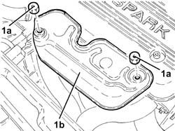
Applies to: all engines; all production periods
Refitting
RemovingPlace the exhaust manifold heat shield back in its housing and fix it using the nuts.
Applies to: engines: 1.9 JTD 8v ; all production periods
Removing
Refitting1. Disconnect the coolant outlet pipe from the engine oil heat exchanger from the rigid inlet pipe to the coolant pump.
2. Disconnect the flexible pipe from the rigid coolant supply pipe to the engine oil heat exchanger.
3. Undo the bolt fixing the rigid coolant supply pipe to the engine oil heat exchanger.
Move the coolant inlet/outlet pipes from the engine oil heat exchanger, as necessary.
4. Undo nuts (4a) and remove exhaust manifold heat shield (4b).
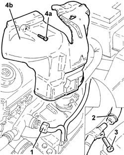
Applies to: engines: 1.9 JTD 8v ; all production periods
Refitting
RemovingFit the exhaust manifold heat shield and fix it using the bolts.
Place the coolant inlet/outlet pipes from the engine oil heat exchanger back in their housings.
Connect the flexible pipe to the rigid coolant supply pipe to the engine oil heat exchanger.
Tighten the bolt fixing the rigid coolant supply pipe from the engine oil heat exchanger.
Connect the coolant outlet pipe from the engine oil heat exchanger to the rigid inlet pipe to the coolant pump.
Refill the engine cooling circuit using the recommended fluid.
 | Type | Component | Name | Qty. |
|---|---|---|---|---|
- | Fluid | ENGINE COOLING CIRCUIT | Mixture 50% Paraflu11 for Alfa Romeo/distilled water | 6.1 |
Applies to: engines: 1.9 JTD 8v ; production: da 04/98 a 02/99; only with equipment: 115 CV
Removing
RefittingProceed with removal 1016A10 sound-proofing cover - r + r .
1. Undo the bolts (1a) and remove the catalytic preconverter heat shield (1b).
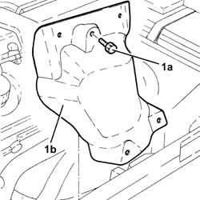
Applies to: engines: 1.9 JTD 8v ; production: da 04/98 a 02/99; only with equipment: 115 CV
1. Undo the bolts (1a) and move the coolant supply pipe to the engine oil heat exchanger (1b).
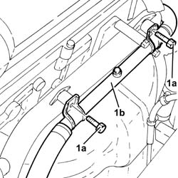
Applies to: engines: 1.9 JTD 8v ; production: da 04/98 a 02/99; only with equipment: 115 CV
1. Undo the upper bolts (1a) and remove the exhaust manifold heat shield (1b).
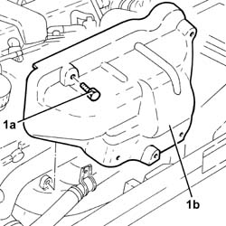
Applies to: engines: 1.9 JTD 8v ; production: da 04/98 a 02/99; only with equipment: 115 CV
Refitting
RemovingPlace the exhaust manifold heat shield back in its housing and secure it using the upper bolts.
Fit the hose carrying coolant to the engine oil heat exchanger and secure using its bolts.
Refit in its seating the catalytic preconverter heat shield and secure using its bolts.
Proceed with refitting 1016A10 sound-proofing cover - r + r .
Applies to: engines: 2.4 JTD 10v; all production periods; only with equipment: Euro 3
Removing
RefittingProceed with removal 1016A10 sound-proofing cover - r + r .
1. Undo the bolts (1a) and (1b), then remove the exhaust manifold shield (1c).
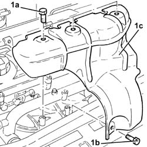
Applies to: engines: 2.4 JTD 10v; all production periods; only with equipment: Euro 3
Refitting
RemovingRefit the exhaust manifold shield in its seating and secure using its bolts.
Proceed with refitting 1016A10 sound-proofing cover - r + r .
Applies to: engines: 1.9 JTD 16v; all production periods
Removing
RefittingPosition the vehicle on the ramp.
Proceed with removal 1016A10 sound-proofing cover - r + r .
Proceed with removal 7055B54 under-engine guard - r r .
Proceed with removal 1088D24 rigid pipe for coolant inlet to water pump - r + r .
1. Undo the bolts (1a) and remove the exhaust manifold heat shield (1b).
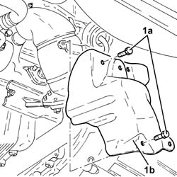
Applies to: engines: 1.9 JTD 16v; all production periods
1. Undo the nuts (1a) and remove the upper exhaust manifold heat shield (1b).
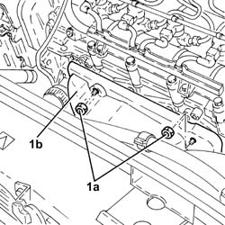
Applies to: engines: 1.9 JTD 16v; all production periods
Refitting
RemovingPlace the upper exhaust manifold heat shield back in its housing and fix it using the nuts.
Place the lower exhaust manifold heat shield back in its housing and fix it using the bolts.
Proceed with refitting 1088D24 rigid pipe for coolant inlet to water pump - r + r .
Proceed with refitting 7055B54 under-engine guard - r r .
Refill the engine cooling system with coolant 0010T20 coolant change .
Proceed with refitting 1016A10 sound-proofing cover - r + r .
Position the vehicle on the ramp.
Applies to: engines: 2.4 JTD 20v; all production periods
Removing
RefittingProceed with removal 1048A50 air inlet pipe to turbo charger - r + r .
Proceed with removal 1076A46 heat shield for catalytic preconverter r r .
1. Undo the attachments (1a) and remove the exhaust manifold heat shield (1b).
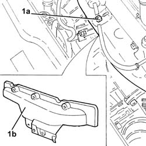
Applies to: engines: 2.4 JTD 20v; all production periods
Refitting
RemovingPlace the exhaust manifold heat shield back in its housing and secure it.
Proceed with refitting 1076A46 heat shield for catalytic preconverter r r .
Proceed with refitting 1048A50 air inlet pipe to turbo charger - r + r .
Topics linked from this page (8)
- 0010T20 coolant change
- 1016A10 sound-proofing cover - r + r
- 1048A50 air inlet pipe to turbo charger - r + r
- 1076A46 heat shield for catalytic preconverter r r
- 1088D24 rigid pipe for coolant inlet to water pump - r + r
- 7055B54 under-engine guard - r r
- A1B Battery ( BATTERY NEGATIVE )
- K40 Lambda sensor
Topics that link to this page (11)
- 1064AA Check on calibration of WASTE - GATE valve actuator calibration
- 1008A44 rear rigid mount - r r
- 1008B20 power unit intermediate mount flexible block - replace
- 1064A22 Variable geometry TURBOCHARGER - R.R.
- 1072C10 exhaust manifold - r + r and replace seal
- 1072C12 exhaust manifold - r r
- 1080B40 catalytic pre-converter - r r
- 1080C80 exhaust gas water heat exchanger for egr valve r r
- 1084B40 engine oil delivery pipe to turbocharger - r + r
- 1088C40 thermostat- r + r
- 5040A26 compressor mount - r r